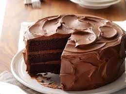
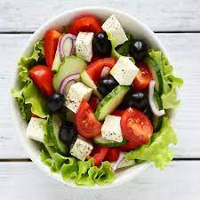
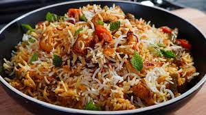

Delicious Pasta
A mouthwatering pasta dish with creamy sauce.
Category: Italian
How to Make
- Boil pasta in salted water until al dente.
- In a separate pan, prepare the creamy sauce with ingredients.
- Combine pasta and sauce, and serve hot.
Savory Tacos
Tasty tacos with a variety of fillings.
Category: Mexican
How to Make
- Prepare taco shells and various fillings.
- Assemble tacos with your favorite ingredients.
- Enjoy your homemade tacos!

Classic Chocolate Cake
A rich and decadent chocolate cake.
Category: Dessert
How to Make
- Prepare the cake batter with chocolate and ingredients.
- Bake in the oven until fully cooked.
- Add frosting and serve slices.

Fresh Greek Salad
A refreshing salad with Mediterranean flavors.
Category: Salad
How to Make
- Chop fresh vegetables and herbs.
- Toss with olive oil, lemon juice, and feta cheese.
- Serve chilled.

Homemade Sushi Rolls
Create your sushi rolls with your favorite ingredients.
Category: Japanese
How to Make
- Prepare sushi rice and slice your choice of fillings.
- Roll the sushi using a bamboo mat.
- Cut into bite-sized pieces and serve with soy sauce.

Spicy Chicken Curry
A flavorful Indian chicken curry with spices.
Category: Indian
How to Make
- Marinate chicken with yogurt and spices for 30 minutes.
- Sauté onions, garlic, and ginger in a pan.
- Add marinated chicken and cook until tender.
- Serve hot with rice or naan bread.

Vegetable Biryani
A fragrant and flavorful Indian rice dish with vegetables.
Category: Indian
How to Make
- Soak basmati rice for 30 minutes and drain.
- Sauté spices, onions, and mixed vegetables.
- Add rice, water, and cook until rice is fluffy.
- Garnish with fried onions and serve.

Palak Paneer
A creamy spinach and cottage cheese curry.
Category: Indian
How to Make
- Blanch spinach and puree it.
- Sauté onions, tomatoes, and spices.
- Add spinach puree and paneer cubes.
- Cook until the curry is creamy, and serve hot.
Tandoori Chicken
Spicy and flavorful Indian-style grilled chicken.
Category: Indian
How to Make
- Marinate chicken with yogurt and tandoori spices.
- Grill until chicken is cooked and has a smoky flavor.
- Serve with mint chutney and naan bread.

Chana Masala
A spicy and tangy chickpea curry.
Category: Indian
How to Make
- Sauté onions, garlic, and spices.
- Add tomatoes, chickpeas, and cook until flavors meld.
- Garnish with fresh cilantro and serve with rice or naan.